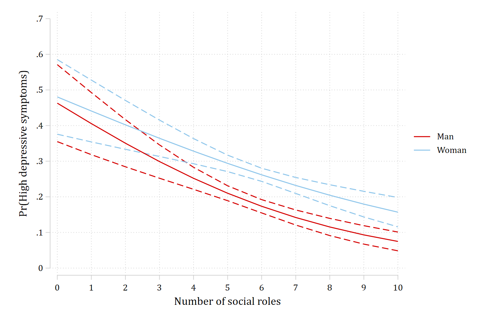
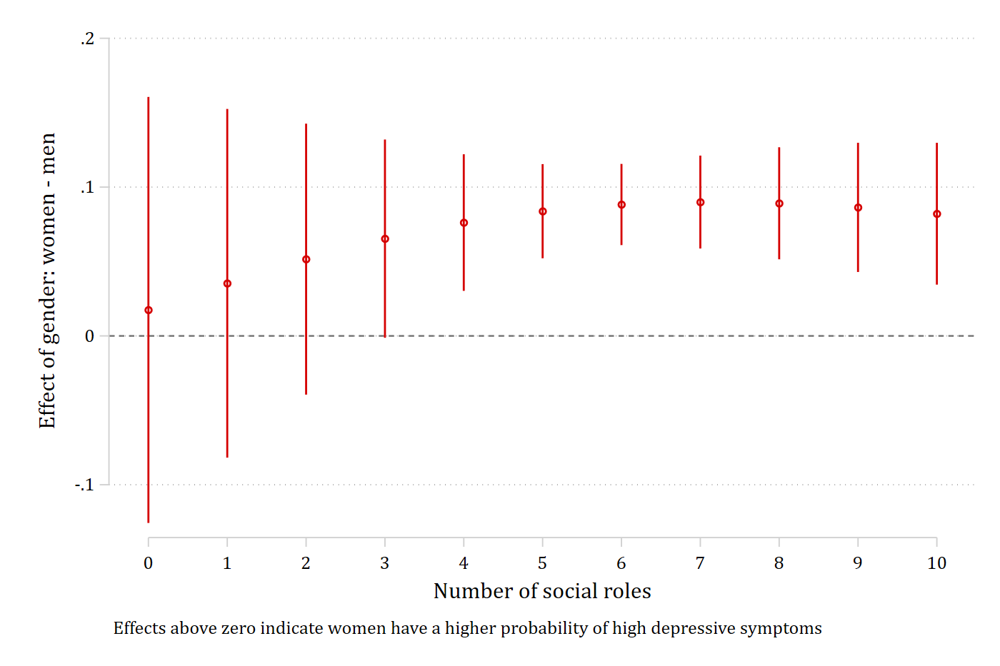

A nominal and a continuous variable
Gender × social roles: Figure 14 of Mize (2019)
When one of the interacting variables is continuous, a plot of the predictions is almost always needed, and the tests have two sides: the effect of the continuous variable within each group, and the group difference at each value of the continuous variable. The article’s example is whether holding more social roles protects against high depressive symptoms equally for men and women (Add Health Wave IV).
The model
use "https://tdmize.github.io/data/data/nli_ah4", clear(Add Health Wave IV | NLI - Nonlinear Interaction Effects | 2018-12-17)
. quietly logit depB c.role##i.woman i.parrole c.age i.race c.income i.college, vce(robust)
estimates store depmodThe predictions (Figure 14)
quietly margins woman, at(role=(0(1)10))
marginsplot, xdimension(role) recastci(rline) ciopts(lpattern(dash)) plotopts(msymbol(none)) ///
xlabel(0(1)10) ylabel(0(0.1)0.7) xtitle("Number of social roles") ///
ytitle("Pr(High depressive symptoms)") title("")Variables that uniquely identify margins: role womangraph export "fig/nli-roles-predictions.png", replace width(1400)(file fig/nli-roles-predictions.png not found)
file fig/nli-roles-predictions.png saved as PNG format
Both curves fall as roles accumulate, and women sit above men. The two questions are whether the slope differs by gender and where along the range of roles the gender gap is significant.
The gender gap at each number of roles
The other side of the interaction: the marginal effect of gender at each value of role, from covariates() with the full range. One numbered row per value, each with its own test.
mecompare i.woman, models(depmod) covariates(role=(0(1)10)) store(gap)Predicting: Pr(depB)
Marginal effects (N_depmod=4307)
| ME # Estimate Robust SE P>|z|
---------------------------------+---------------------------------------
woman |
Woman - Man |
role=0 | 1 0.017 0.073 0.811
role=1 | 2 0.035 0.060 0.554
role=2 | 3 0.052 0.046 0.267
role=3 | 4 0.065 0.034 0.054
role=4 | 5 0.076 0.023 0.001
role=5 | 6 0.084 0.016 0.000
role=6 | 7 0.088 0.014 0.000
role=7 | 8 0.090 0.016 0.000
role=8 | 9 0.089 0.019 0.000
role=9 | 10 0.086 0.022 0.000
role=10 | 11 0.082 0.024 0.001This is the information Figure 14 encodes in solid versus dashed lines: the gender gap is significant at three or more roles and not at zero to two. Plotted directly:
coefplot gap_depmod, vertical yline(0) ///
coeflabels(woman_role_0 = "0" woman_role_1 = "1" woman_role_2 = "2" ///
woman_role_3 = "3" woman_role_4 = "4" woman_role_5 = "5" ///
woman_role_6 = "6" woman_role_7 = "7" woman_role_8 = "8" ///
woman_role_9 = "9" woman_role_10 = "10") ///
xtitle("Number of social roles") ytitle("Effect of gender: women - men") ///
note("Effects above zero indicate women have a higher probability of high depressive symptoms"
)
graph export "fig/nli-roles-gender-gap.png", replace width(1400)(file fig/nli-roles-gender-gap.png not found)
file fig/nli-roles-gender-gap.png saved as PNG format
A joint test that the gap is the same at every number of roles is the overall test of interaction on this side:
metest 1 = 2 = 3 = 4 = 5 = 6 = 7 = 8 = 9 = 10 = 11Tests of equality
| chi2 df pvalue
---------------------------------+--------------------------------
1=2=3=4=5=6=7=8=9=10=11 | 104.705 5.000 0.000